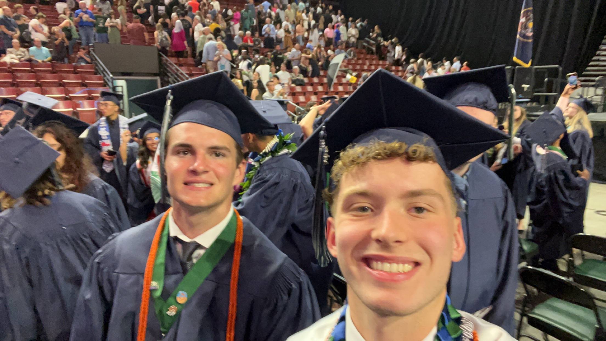
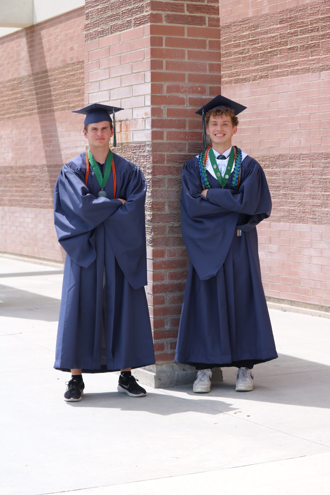
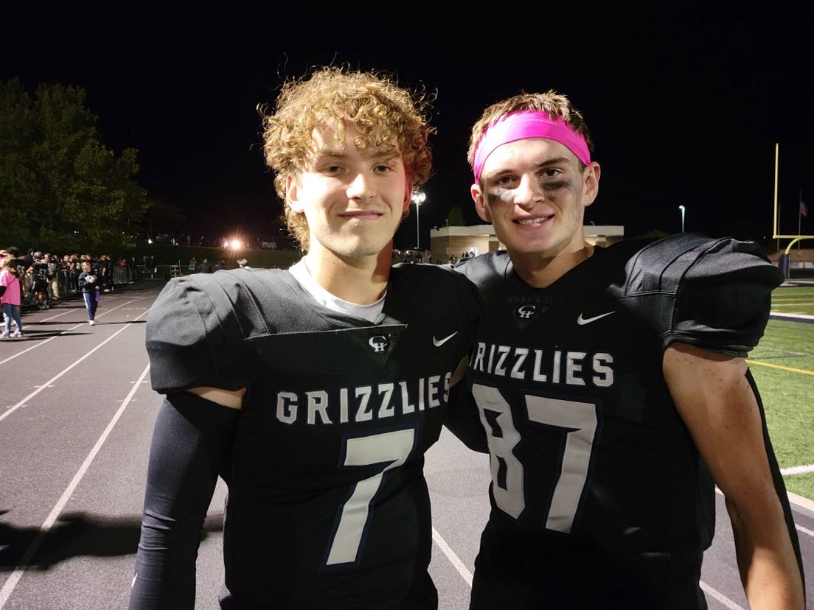

This is my best friend Hyrum. We first met at a football camp the summer before we went into 7th grade. We randomly paired up, then got put on the same team together for the camp. We mostly just made small talk, like asking about sports we both played before and why we were at the camp.
"They initially only talk about sports teams or local events. However, as they grow to be more comfortable with each other they begin to talk about religion and politics." (Helper, 2023)


After the camp I did not think I would really see him again. That was until first day of little league football tryouts about a month later. We saw eachother and started talking again. At this point he was a little deeper into the onion. Our talks got a bit more personal, talking about what we've been up to and our families.
After tryouts is when our friendship took off. We were picked to the same little league team. He was quarterback and I was receiver. As a duo like that we were expected to be good friends. We started texting eachother more and sending eachother videos on instagram. We started getting way more personal with eachother.
In high school, we had been friends for a couple years by then. We were hanging out with eachother a lot. We knew just about everything about eachother. We were close to the center of the onion. Nothing was too personal to tell eachother.
Over time, our relationship kept developing. From small talk in a group setting to talking about our personal problems. The longer we knew eachother, our trust in eachothe grew stronger. Having trust in a personal is huge in telling them more personal details about yourself. Now he is on a mission while I am here in college and I still email him random stuff all the time.
